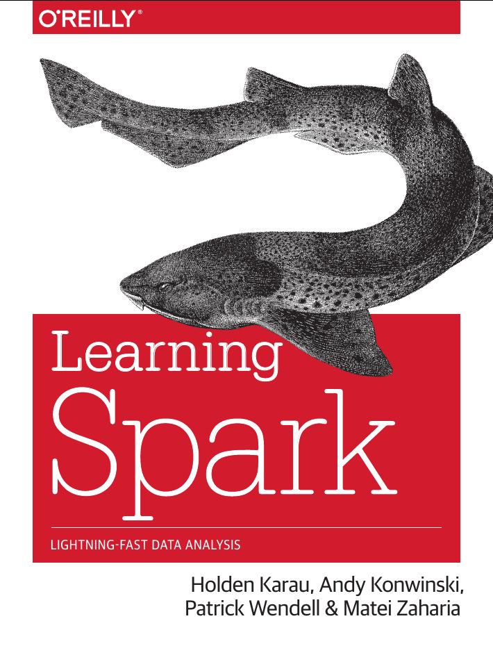
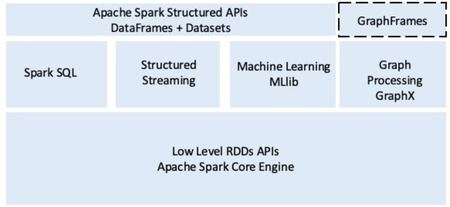
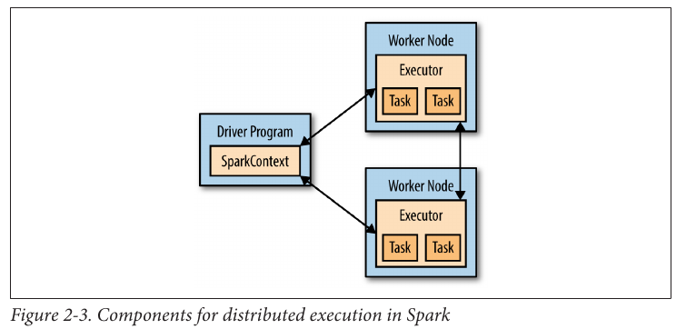
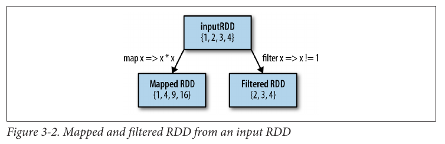

 ## ITEC 4220 - Advanced Data Analytics ### Module 8 - Big Data algorithms and tools: Spark #### Cengiz Gunay, Rick Price, Fall 2020 #### Reading: Ch 2 Spark - The definitive guide
### Python example for Hadoop streaming (Mapper) - Need to run chmod a+x map.py & chmod a+x reduce.py to make these executable ```python #! /usr/bin/python # Map function import sys for line in sys.stdin: val = line.strip() (date, temp) = (val[10:14], val[15:20]) print ("%s\t%s" % (date, temp)) ```
### Python example for Hadoop streaming (Reducer) - Need to run chmod a+x map.py & chmod a+x reduce.py to make these executable ```python #! /usr/bin/python # Reduce function import sys (last_key, max_val) = (None, -99999) for line in sys.stdin: (key, val) = line.strip().split("\t") if last_key and last_key != key: print ("%s\t%s" % (last_key, max_val)) (last_key, max_val) = (key, int(float(val))) else: (last_key, max_val) = (key, max(max_val, int(float(val)))) if last_key: print ("%s\t%s" % (last_key, max_val)) ```
### How to run it On the command line without Hadoop: ```bash % cat Daily.txt | python map.py | sort | python reduce.py 0727 0 0728 92 0729 90 0730 91 0731 106 0801 108 ```
### With Hadoop ```bash % bin/hadoop jar $HADOOP_HOME/share/hadoop/tools/lib/hadoop-streaming-*.jar \ -input input/Daily.txt \ -output output \ -mapper map.py \ -reducer reduce.py ``` ```bash 0727 0 0728 92 0729 90 0730 91 0731 106 0801 108 ```
### What comes after Hadoop? - Hadoop created an ecosystem of projects: - Avro: Data serialization system - Flume: Work with data streams - Sqoop: Interface with traditional relational DBs - Hive: SQL queries converted to MapReduce - [Pig](https://www.slideshare.net/kevinweil/hadoop-pig-and-twitter-nosql-east-2009/): Hadoop processing with custom high-level language - Parquet: Columnar storage for nested data - Crunch: High-level API for using Hadoop - [Kafka](https://kafka.apache.org/): Distributed streaming platform - [Spark](https://spark.apache.org/): Another distributed computing framework
### Spark - Since 2009 - Written in Scala running on JVM
### Features - Speed - Up to 100 times faster than Hadoop - Supports in-memory storage of intermediate results - Multiple languages supported - Python - Scala - R - Java - Advanced Analytics - SQL queries - Streaming data - Machine learning - Graph algorithms
### Spark and Hadoop Differences - Hadoop is a batch process - Hadoop processes data from the HDFS and writes intermediate results to HDFS - Results are written to the HDFS - Can read data from streaming, local file system, HDFS or other distributed file system
### Spark Components 
### Resilient Distributed Datasets (RDD) - Fundamental data structure for Spark - Immutable distributed collection of objects - Divided into logical partitions - Can be computed on different nodes - Can contain any data type or Python, Java or Scala - Can contain UDTs
### Spark SQL - Integrates relational processing - Supports queries in SQL and HQL(Hive Query Language) - Supports various data sources - CSV, Text, JSON, etc. - Libraries - DataSource API - DataFrane API - Interpreter and Optimizer - SQL Service
### Spark Streaming - Process real-time streaming data - Fundamental stream unit is DStream - Series of RDDs to process real-time data - Viewed as a continually growing table
### MLib - Machine Learning Library - Tools - ML Algorithms - Classification, Regression, CLustiner, Collaborative Filtering - Featurization - Feature extraction, transformations, and dimention reduction - Pipelines - Contruct and training ML pipelines - Persistence - Saving and loading algorithms, models and pipelines - Utilities - Linear algebra, statistics, data handling
### GraphX - API for graphs and graph-parallel computation - Extends RDD with a Resilient Distributed Property Graph - Can have parallel edges to define multiple relationships between vertices
### GraphFrames - Similar to GraphX but built on top of DataFrames - DataSet - Distributed collection of data - Strong typing - Available in Scala and Java - DataFrame - DataSet organized into named columns - Representation of DataSet in rows - Available in Scala, Java, Python and R
### Spark works with _resilient distributed datasets_ (RDDs) - To use Python for Spark, run: `pyspark` - A line count program example: ```python >>> lines = sc.textFile("README.md") # Create an RDD called lines >>> lines.count() # Count the number of items in this RDD 127 >>> lines.first() # First item in this RDD, i.e. first line of README.md u'# Apache Spark' ``` - Parallel operation completely transparent! - `sc` is the `SparkContext` _driver_ to access Spark and create RDDs - RDD is broken into pieces to run `count()` in parallel
### Inside Spark  - Another example with custom filter function: <!-- .element: class="fragment" data-fragment-index="2" --> ```python >>> lines = sc.textFile("README.md") >>> pythonLines = lines.filter(lambda line: "Python" in line) >>> pythonLines.first() u'## Interactive Python Shell' ```
### Working with RDDs - Transformations_ create new RDDs; e.g.: ```python >>> pythonLines = lines.filter(lambda line: "Python" in line) ``` - Actions_ calculate results from RDDs; e.g.: ```python >>> pythonLines.first() ```
### RDD transformations - Most commonly used: `map()` and `filter()`  ```python mapex = rdd.map(lambda x: x * x) ``` - If multiple outputs for each input, then use `flatMap()` - Set operations: `distinct()`, `union()`, `intersection()`, `subtract()`, `cartesian()` (expensive)
### RDD actions - Most common `reduce()`: Takes two inputs and outputs one ```python sum = rdd.reduce(lambda x, y: x + y) ``` - `fold()` also asks a _zero_ value for initialization ```python sum = rdd.fold(0, lambda x, y: x + y) ``` - `aggregate()` asks for accummulation and combine functions. Example that calculates a running sum and count of elements to calculate an average value: ```python sumCount = nums.aggregate((0, 0), (lambda acc, value: (acc[0] + value, acc[1] + 1)), (lambda acc1, acc2: (acc1[0] + acc2[0], acc1[1] + acc2[1]))) return sumCount[0] / float(sumCount[1]) ```
### RDD actions (continued) - `collect()`: Return all elements - `count()`: Number of elements - `countByValue()`: Number of times each element occurs in RDD (histogram) - and more...
### Spark SQL - Uses _DataFrame_ RDD objects that hold semi-structured data - Can read/write data in JSON, Hive Tables, and Parquet - SQL interface to be used inside or outside Spark (e.g. JDBC connection or from Tableau) ```python hiveCtx = HiveContext(sc) input = hiveCtx.jsonFile(inputFile) # Register the input DataFrame input.registerTempTable("tweets") # Select tweets based on the retweetCount topTweets = hiveCtx.sql("""SELECT text, retweetCount FROM tweets ORDER BY retweetCount LIMIT 10""") ```
### Closing notes for Spark Spark also provides: - Real-time processing via streaming (Chapter 10) - Machine learning library _MLlib_ (Chapter 11) More resources: - [Book's Github repo with examples](https://github.com/databricks/learning-spark) - [Spark 2.4.4 API documentation](https://spark.apache.org/docs/2.4.4/) - <br> JetStream image version - [Spark Quick Start](https://spark.apache.org/docs/latest/quick-start.html) - [RDD Programming Guide](https://spark.apache.org/docs/latest/rdd-programming-guide.html)